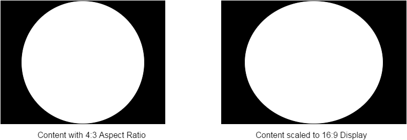
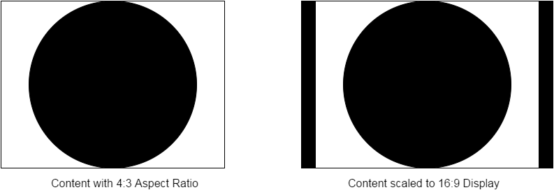

アプリケーションは、レイヤオブジェクトを指定してコンテンツをディスプレイプロセスに送り出します。グラフィックスの初期化シーケンスでは、ディスプレイへの表示を目的とした最終的なレンダリングターゲットとしてアプリケーションが使用するテクスチャにレイヤがリンクされます。レイヤは、特定のディスプレイに関連付けられている必要があります。
レイヤのパラメータの一部は、グラフィック API を使用してネイティブウィンドウを設定するときに定義されます。（このドキュメントでは、「ネイティブウィンドウ」と「レイヤ」を同じ意味で使用しています。）ネイティブウィンドウに割り当てられるテクスチャの寸法は、ディスプレイでのコンテンツのスケーリング方法に関連します。
レイヤに関連付けられたテクスチャがディスプレイの解像度と一致しない場合は、コンテンツがスケーリングされます。アプリケーションでは、スケーリングモードを使用して、コンテンツのスケーリング方法を制御できます。使用可能なスケーリングモードは、プラットフォームによって異なることがあります。
デフォルトでは、最終的な出力が現在のディスプレイの解像度に合わせてアップスケーリングまたはダウンスケーリングされます。プラットフォームによっては、最小／最大スケーリング比率が制限されることがあります。NX では、スケーリングに関する制限は特にありません。1080p（サポートされる最大解像度）で作成されたコンテンツは、他のいずれかのサポートされる解像度までダウンスケールされる場合があります。また、アップスケーリングに関する制限はありません。
コンテンツをスケーリングできない場合、そのコンテンツはディスプレイに表示されません。
デフォルトのスケーリングモードの制限は、アスペクト比が維持されないことです。例えば、アプリケーションがアスペクト比 4:3 のフレームバッファを送信し、ディスプレイでアスペクト比 16:9 の解像度が使用されている場合、コンテンツは伸びて表示されます。

アプリケーションでは、別のスケーリングモードを指定してアスペクト比を維持することができます。必要に応じて、ピラーボックスまたはレターボックスが追加されます。4:3 から 16:9 に変更される同様の例では、ピラーボックスが追加されます。

レイヤでは、アプリケーションで使用する可能性のあるフレームバッファをすべて所有しています。
ディスプレイプロセスでは、アプリケーションで用意したバッファのうち、次に使用可能なものを要求に応じて取得します。
ダブルバッファリングなどのバッファリングモードは、グラフィックス API を使用してアプリケーションで設定します。使用可能なバッファリングモードの詳細については、それぞれのモードのドキュメントを参照してください。
アプリケーションでは、取得したフレームをフレームバッファにレンダリングできます。
アプリケーションでは、最終的にフレームバッファを解放してディスプレイプロセスに戻す必要があります。続いて、フレームバッファはディスプレイで使用できるようにキューに格納されます。
バッファリングモードに関係なく、フレームをレンダリングするプロセスは同一です。一方、細かい点で重要なこととして、ディスプレイのリフレッシュレートとの同期があります。
ディスプレイプロセスでは、物理ディスプレイで発生した VSYNC イベントでのみバッファを管理しています。VSYNC では、最も最近に完成したテクスチャをディスプレイプロセスで使用します。
グラフィックス API では、テクスチャを取得して提示する手段を用意しています。わかりやすいように、次に使用可能なテクスチャをディスプレイプロセスから acquire 関数で取得し、そのテクスチャがディスプレイで使用可能になったことを present 関数で示すものとします。また、ディスプレイパイプラインの中でテクスチャ A と B を同じレイヤに関連付けているとします。基本的なレンダリングループは次のようになります。
Texture* t; // A または B を指します。 acquire(&t); // ... present(t); |
最初のフレームでは、acquire を呼び出してディスプレイプロセスから A を取得します。A に対して実行する GPU コマンドがある場合はロックが登録されます。これにより、ディスプレイプロセスでは、レンダリングが完了するまでテクスチャの取得処理は実行されません。
この時点で、アプリケーションでは次の acquire の呼び出しで B のレンダリングを開始できます。VSYNC イベントの発生を明示的に待機する必要はありません。
VSYNC の際に、ディスプレイプロセスでは A のレンダリングが完了していることを認識します。ここで、完了しているテクスチャをディスプレイに渡します。
アプリケーションでは、テクスチャに B を指定して present を呼び出し、acquire の呼び出しに進みます。この時点で acquire はブロックされます。次のテクスチャである A はディスプレイでまだ使用中であり、ディスプレイプロセスでロックされています。次の VSYNC で B がディスプレイに表示され、A のロックは解放されます。